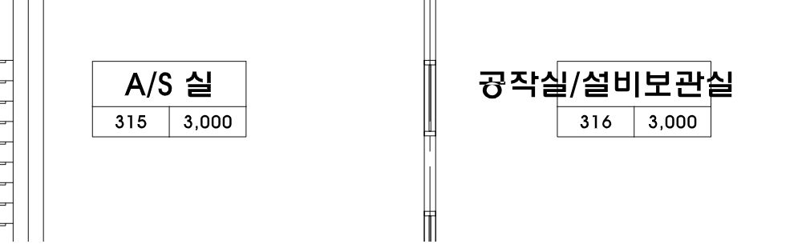

가연물 단위 격자·대표 묶음·반자고 비교
같은 건물과 CFAST 7.7.7 원 엔진으로 30분 계산. 기존 조건 → 배치만 변경 → 배치와 실별 반자고 변경을 비교했습니다.
지정 열량 7,887.64 MJ와 환산 연료 435.78 kg 보존. 이 값은 시나리오의 화재곡선에서 환산한 양입니다. 실제 30분 방출량은 착화 시점과 산소 조건에 따라 달라집니다.
| 비교 항목 | 기존 v27 | 배치만 변경 | 배치 + 반자고 |
|---|
| 3층 화재실 계산 높이 (m) | 5.50 | 5.50 | 3.00 |
|---|
| 화재실 상부 최고 (°C) | 462.59 | 462.59 | 514.18 |
|---|
| 홀 상부 최고 (°C) | 136.49 | 136.49 | 198.90 |
|---|
| 홀 가연물 표면 최고 (°C) | 71.45 | 71.29 | 109.48 |
|---|
| A/S 가연물 표면 최고 (°C) | 36.54 | 36.54 | 50.17 |
|---|
| 홀 최저 연기층 경계 (m) | 1.24 | 1.24 | 1.28 |
|---|
| 최대 총 HRR (kW) | 7,141.89 | 7,141.89 | 7,165.77 |
|---|
| 실제 30분 방출 열량 (MJ) | 4,536.48 | 4,536.48 | 4,537.17 |
|---|
가연물 표면의 착화 기준은 기존 369°C를 유지했습니다. 표면 최고값은 해당 실 대표 대상 중 최댓값입니다. 문 근처는 CAD상 배치 구분이며, 문을 통과하는 국소 화염 접촉을 새로 계산한 것은 아닙니다.
도면 반자고 근거

3층 두 실과 홀은 3.0m 표기를 적용했습니다. 표기가 없는 실은 같은 건물의 용도별 값을 추정 적용했습니다. 계단·승강로·램프 연결 공간은 구조 높이를 유지합니다. 반자 경계의 열물성은 비교를 위해 기존 콘크리트 대리값을 유지했습니다.
가연물 단위와 계산의 연결
표시 단위 20개 → 대표 화원 7개. 기존 화재실 세 묶음은 유지하고, 홀과 A/S의 재고를 각각 문 근처·안쪽에 50%씩 나눴습니다. 단위별 폭·깊이·높이·열량 지분·환산 질량·대표 화원 ID를 저장했습니다. 가구 외형은 책상 0.75m, 수납장 1.2/1.8m이며 실측 재고가 아닙니다. 착화 판정면 높이는 별도 입력입니다.
상세 비교 · 시계열 요약 · 실별 높이 근거 · 입력 보존·출력 검사